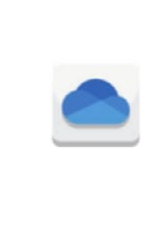
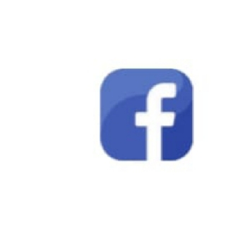
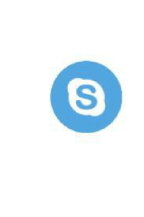
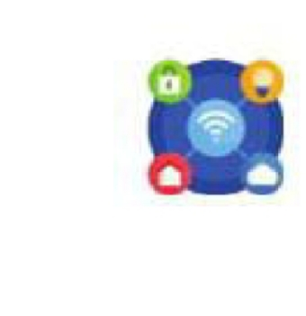
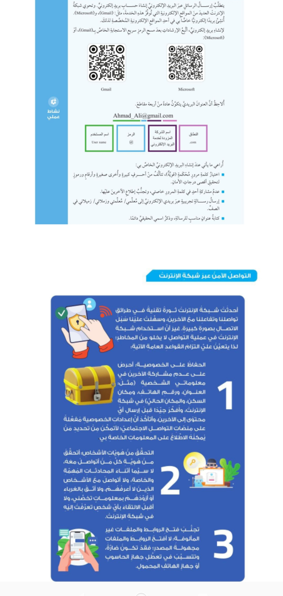
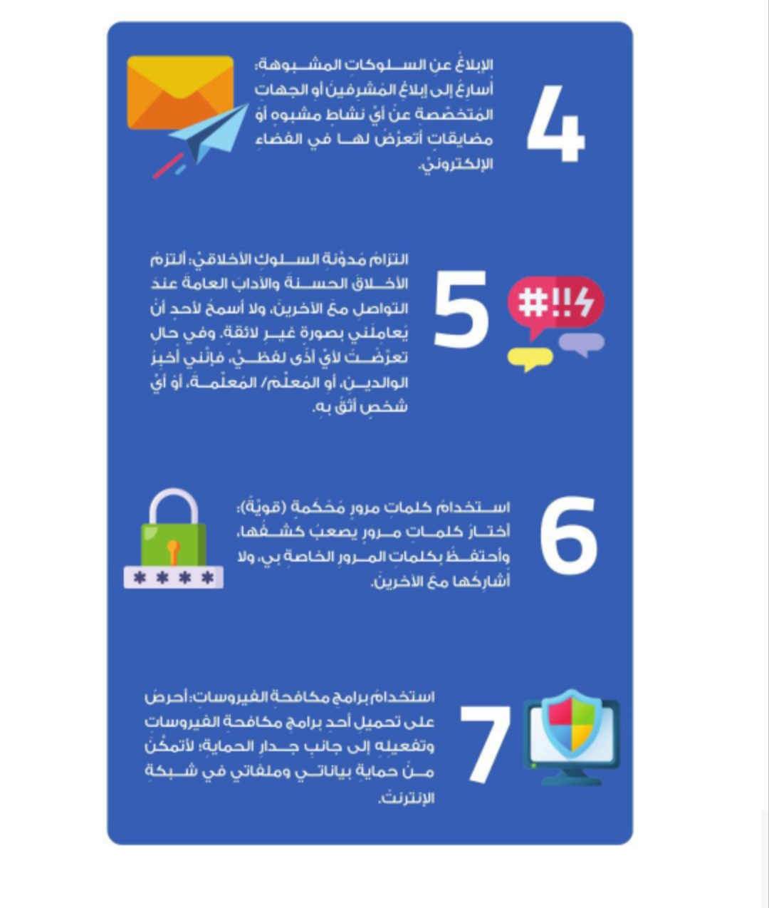

أولًا: مفهوم التواصل باستخدام الشبكات
وضح المقصود بالتواصل باستخدام الشبكات (Network Communication):
- بروتوكول نقل الملفات (FTP).
- بروتوكول الإنترنت (IP).
وتساعد البروتوكولات على تنظيم عملية الاتصال ونقل البيانات بين الأجهزة.
ثانيًا: مزايا التواصل باستخدام الشبكات
يتصف التواصل باستخدام الشبكات بالعديد من المزايا التي تعود بالنفع على المستخدمين، وأبرزها:
1. مشاركة المعلومات
من مزايا التواصل باستخدام الشبكات مشاركة المعلومات. وضح ذلك:
إذ يُمكن للمستخدمين المصرح لهم باستعمال أجهزة الحاسوب في الشبكة الوصول إلى المعلومات والبيانات ومشاركتها. ويشمل ذلك المشروعات الخاصة بالمجموعة، وقواعد البيانات والصور وغيرها.
2. مشاركة الأجهزة
من مزايا التواصل باستخدام الشبكات مشاركة الأجهزة. وضح ذلك:
إذ يُمكن مشاركة جهاز واحد متصل بالشبكة، مثل الطابعة والماسح الضوئي، بين العديد من المستخدمين؛ ما يقلل من التكلفة، ويختصر الوقت اللازم للوصول إلى الموارد.
3. مشاركة البرامج
من مزايا التواصل باستخدام الشبكات مشاركة البرامج. وضح ذلك:
فبدلًا من شراء برنامج لكل جهاز حاسوب في الشبكة، تُثبت البرامج المشتركة في الخادم؛ ما يتيح لجميع المستخدمين الوصول إليها واستخدامها عن طريق أجهزتهم.
4. البيئة التعاونية
من مزايا التواصل باستخدام الشبكات البيئة التعاونية. وضح ذلك:
إذ يُمكن للمستخدمين مشاركة الموارد والمعلومات في الشبكة على نحو فاعل؛ ما يسهل العمل الجماعي في المشروعات والمهام المشتركة، فتعزز الإنتاجية ويزيد الابتكار داخل المؤسسات.
ثالثًا: التواصل عبر شبكة الإنترنت
شهد قطاع التكنولوجيا نموًا متسارعًا أدى إلى تطوير شبكات الاتصال المتقدمة، وبخاصة شبكة الإنترنت التي أحدثت تغييرًا جذريًا في طريقة التواصل بين الناس والوصول إلى المعلومات.
أشكال الاتصال والتواصل عبر شبكة الإنترنت (Internet Communication):
مميزات الاتصال والتواصل عبر شبكة الإنترنت
- توفير العديد من أدوات الاتصال.
- أنه أقل تكلفة وأكثر سهولة مقارنة بطرائق التواصل التقليدية، مثل الهاتف الثابت والرسائل المتداولة بالبريد العادي.
💡 إضاءة
في عام 2024م، وصل عدد مستخدمي شبكة الإنترنت إلى نحو 5.30 مليار شخص. وقد تعددت استخداماتهم لهذه الشبكة، وشملت التصفح والتواصل والتعلم والبحث والترفيه والتسوق وغير ذلك.
ولا شك في أن هذا الرقم كبير جدًا؛ فهو يمثل أكثر من نصف سكان كوكب الأرض.
ومن الملاحظ أن رسائل البريد الإلكتروني تتزاحم كل دقيقة، بحيث تُرسل أكثر من 150 مليون رسالة بريد إلكتروني يوميًا، وفقًا للأرقام الواردة في المادة التعليمية.
رابعًا: طرائق الاتصال والتواصل عبر الإنترنت
تتنوع طرائق الاتصال والتواصل عبر شبكة الإنترنت، ويمكن إجمال أبرز هذه الطرائق فيما يأتي:
1. البريد الإلكتروني
وضح المقصود بالبريد الإلكتروني:
استخدامات البريد الإلكتروني
يُستخدم البريد الإلكتروني في إرسال الرسائل واستقبالها عبر شبكة الإنترنت باستخدام عدد من البروتوكولات.
أمثلة على البروتوكولات التي يستخدمها البريد الإلكتروني
- SMTP: يُستخدم لإرسال الرسائل.
- IMAP: يُستخدم للوصول إلى الرسائل وإدارتها على الخادم.
أمثلة على خدمات البريد الإلكتروني
- Gmail.
- Yahoo Mail.
- Outlook.
2. التعلم عن بُعد
تحوي شبكة الإنترنت العديد من التطبيقات والمنصات التي تساعد على التعلم عن بُعد، مثل:
- Microsoft Teams.
- Google Classroom.
- Moodle.
- منصة إدراك.
- منصة درسك.
- Khan Academy.
💡 إضاءة: منصة إدراك
إدراك منصة إلكترونية عربية للمساقات الجماعية مفتوحة المصادر (MOOCs). وقد أُسست هذه المنصة بمبادرة من مؤسسة الملكة رانيا للتعليم والتنمية التي تحرص على بذل الجهود والمساعي للنهوض بالعالم العربي في مجال التربية والتعليم؛ ذلك أنهما يمثلان حجر الأساس لتقدم الشعوب وتطورها وازدهارها.
💡 إضاءة: منصة درسك
درسك منصة أردنية مجانية للتعلم عن بُعد؛ إذ توفر لطلبة المدارس من الصف الأول إلى الصف الثاني عشر دروسًا تعليمية عن طريق مقاطع الفيديو المصورة والمنظمة والمجدولة وفقًا لمنهاج التعليم الأردني.
ويقدم هذه الدروس نخبة من المعلمين والمعلمات؛ ما يسهل على الطلبة الاستمرار في عملية التعلم ومتابعة موادهم الدراسية.
3. الحوسبة السحابية

كيف تساعد الحوسبة السحابية على الاتصال عبر شبكة الإنترنت؟
تتيح الحوسبة السحابية الوصول السهل إلى الموارد السحابية والتطبيقات عبر شبكة الإنترنت.
أمثلة على تطبيقات الحوسبة السحابية
- Google Drive.
- OneDrive.
4. الألعاب الإلكترونية
تحوي شبكة الإنترنت العديد من تطبيقات الألعاب الترفيهية والتعليمية التي يُستخدم بعضها بصورة فردية، ويُستخدم بعضها الآخر بصورة جماعية.
5. وسائل التواصل الاجتماعي والمراسلة والدردشة

تتيح هذه التطبيقات التواصل والتفاعل مع الآخرين بسهولة وسرعة.
6. العمل عن بُعد
مثال على أدوات للتواصل يُمكن استخدامها في العمل من أي مكان باستخدام شبكة الإنترنت:
LinkedIn.
7. المؤتمرات والاجتماعات عن بُعد
تُستخدم تطبيقات ومنصات مختلفة لعقد الاجتماعات الافتراضية والمؤتمرات عن بُعد.

ملاحظة: يُرجى مراجعة أسماء التطبيقات الواردة في صورة الكتاب لإضافتها بدقة.
8. البث المباشر
يتيح البث المباشر التواصل مع الجمهور عبر منصات الإنترنت المختلفة.
من أمثلة المنصات: YouTube.
9. المنتديات والمدونات
الاستفادة من المنتديات والمدونات
يُستفاد من المنتديات والمدونات في مشاركة الأفكار والمناقشات.
أمثلة على أدوات إنشاء المدونات
- Blogger.
- WordPress.
10. البودكاست
استخدامات البودكاست
يُستخدم هذا التطبيق في إنشاء البرامج الصوتية والاستماع إليها عبر شبكة الإنترنت.
أمثلة على تطبيقات البودكاست
- Apple Podcasts.
- Spotify.
11. الرسائل القصيرة
يمكن إرسال الرسائل النصية عبر العديد من التطبيقات باستخدام شبكة الإنترنت.
ملاحظة: يُرجى مراجعة أسماء التطبيقات الواردة في صورة الكتاب لإضافتها بدقة.
12. إنترنت الأشياء (IoT)
وضح المقصود بإنترنت الأشياء:

خامسًا: التواصل عن طريق البريد الإلكتروني (E-mail)
وضح المقصود بالبريد الإلكتروني
مميزات البريد الإلكتروني
- يُستخدم غالبًا في التواصل الشخصي والتواصل المهني، وقد يتضمن نصوصًا وملفات مرفقة وصورًا وروابط.
- يُعد البريد الإلكتروني أداة فاعلة وسريعة للتواصل؛ إذ يمكن الوصول إليه من أي مكان، وفي أي وقت، عن طريق الأجهزة المتصلة بشبكة الإنترنت.
- يُعد من وسائل الاتصال الشائعة، ويمكن تعزيز خصوصيته وأمانه باستخدام كلمات مرور قوية وإجراءات حماية مناسبة.
- يتيح البريد الإلكتروني إرسال رسائل فردية أو رسائل جماعية إلى مجموعة من الأشخاص باستخدام الخدمات المتوافرة فيه بخطوة واحدة.

